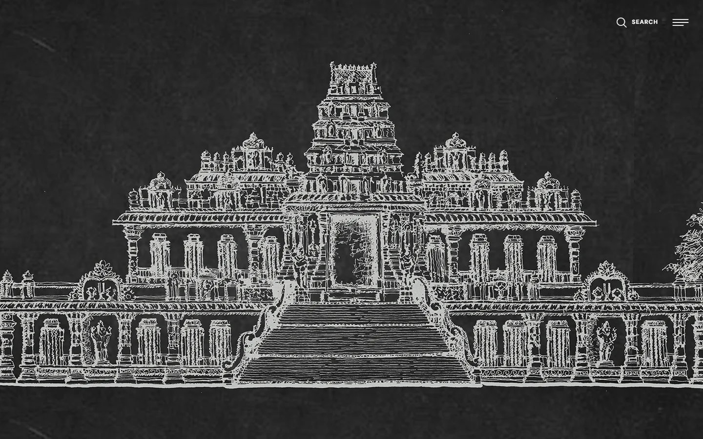
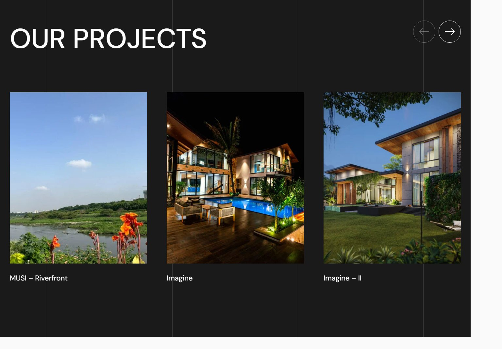

The live website for Vanzscape, an architecture and landscape design studio founded in 1990 by principal architect Ar. C V Vandana. The site spans four practice areas — Architecture, Interiors, Landscape, and Urbanscape — and doubles as a portfolio and blog for a working studio with a real project pipeline and award history.
A hand-drawn line illustration of a temple facade on a chalkboard-dark background — an immediate, distinctive alternative to the stock architectural photography most studio sites default to.

Real built work — MUSI (Riverfront), Imagine, and Imagine II — presented as a simple horizontal gallery on a dark ground so the photography does the talking.
